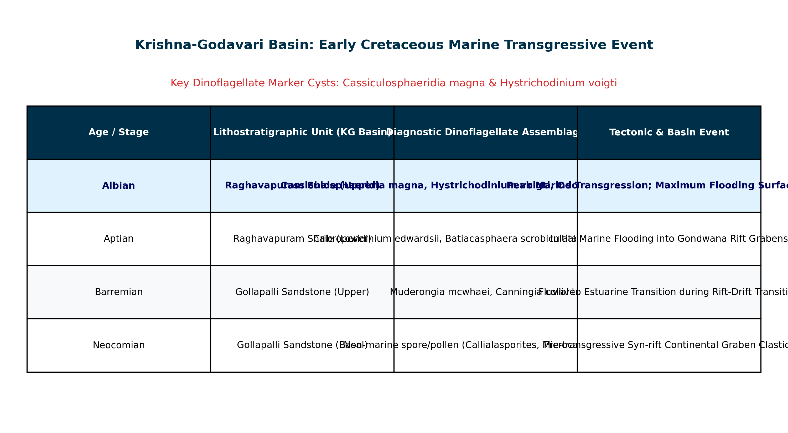

The Krishna-Godavari (KG) Basin, located along the eastern passive continental margin of peninsular India (Andhra Pradesh), is a polyhistory pericratonic rift and drift basin. It initiated during the Late Jurassic to Early Cretaceous breakup of Eastern Gondwana, when the Indian continental plate rifted and separated from East Antarctica and Australia (~135–120 Ma).
During the early evolution of this passive margin, a series of NE–SW trending extensional horsts and grabens (e.g., Mandapeta Graben, Chintalapudi Sub-basin, Gudivada Graben) developed. As continental separation accelerated, marine waters from the nascent Indian Ocean flooded the subsiding rift valleys, culminating in a major, regionally extensive marine transgressive event during the Early Cretaceous (Aptian–Albian stages).

The classic Mesozoic sequence exposed in the Krishna-Godavari Basin comprises three conformable to paraconformable lithostratigraphic units:
Dinoflagellates are unicellular, biflagellated eukaryotic protists (Phylum Dinoflagellata). During their sexual life cycle, many planktic marine species form a dormant, benthic resting cyst (dinocyst) composed of dinosporin—a complex, highly resistant, lipoidal biomacromolecule functionally analogous to sporopollenin.
Because dinocysts resist non-oxidizing acids ($HCl$, $HF$), they survive severe diagenetic leaching that completely dissolves calcareous microfossils (foraminifera, nannoplankton). In the dark, dysoxic shales of the Raghavapuram Mudstone, dinoflagellate cysts provide absolute biostratigraphic resolution:
In petroleum sequence stratigraphy, dinoflagellate cysts are the definitive tool for delineating Transgressive Systems Tracts (TST) and identifying Maximum Flooding Surfaces (MFS):
The Paleocene transgressive succession in the KG Basin is represented by the Palakollu Shale and basal Pasarlapudi Formation, deposited following Deccan volcanism. Its microplankton assemblage is characterized by typical Cenozoic marker dinocysts such as Damassadinium californicum, Carpatella cornuta, and Senegalinium, completely lacking the Mesozoic species Cassiculosphaeridia magna and Hystrichodinium voigtii.
In the KG Basin, Jurassic strata (represented by the lower Gollapalli Sandstone and subsurface Mandapeta Red Beds) are strictly non-marine, syn-rift continental deposits formed in fluvial-lacustrine settings. They contain terrestrial spore-pollen (e.g., Classopollis, Callialasporites, Araucariacites) but are devoid of marine dinoflagellate cysts, as marine waters had not yet breached the rift valley.
The regional marine transgressive event that drowned the early rift system along the eastern coast of India occurred in the Early Cretaceous (Aptian to Albian stages, ~125–100 Ma), depositing the hydrocarbon-prolific Raghavapuram Mudstone. Palynological investigations by Garg et al., Kumar, and ONGC/DGH firmly established that the acme of Cassiculosphaeridia magna, Hystrichodinium voigtii, Dingodinium cerviculum, and Canningia establishes this Early Cretaceous transgressive datum.
The Late Paleocene (Thanetian stage) in the Tethyan and Indo-Pacific realms coincides with the Paleocene-Eocene Thermal Maximum (PETM). Its diagnostic palynological signature is an extraordinary global acme of the peridinioid genus Apectodinium (e.g., Apectodinium augustum, A. homomorphum), not Cretaceous gonyaulacoids.
| Formation Name | Geological Age | Depositional Environment | Diagnostic Palynomorph Assemblage | Petroleum System Role |
|---|---|---|---|---|
| Gollapalli Sandstone | Late Jurassic – Early Cretaceous (Neocomian) | Fluvial, alluvial fan & lacustrine rift valleys | Terrestrial spore-pollen: Classopollis, Callialasporites, Microcachryidites; no marine dinocysts | Syn-rift Reservoir Rock |
| Raghavapuram Mudstone | Early Cretaceous (Aptian – Albian) | Shallow marine, prodelta to shelf (Major Transgression) | Dinocysts: Cassiculosphaeridia magna, Hystrichodinium voigtii, Dingodinium cerviculum | Primary Regional Source Rock & Top Seal |
| Tirupati Sandstone | Late Cretaceous (Cenomanian – Campanian) | Littoral, estuarine to shallow marine (Regression) | Mixed terrestrial pollen and marginal-marine cysts: Palaeoperidinium, Odontochitina costata | Regional Reservoir Sandstone |
| Razole Volcanics | Late Cretaceous – Early Paleocene (66 Ma) | Subaerial to shallow subaqueous basaltic lava flows | Intertrappean fresh-to-brackish algae: Botryococcus, Azolla | Volcanic marker / tight unit |
| Palakollu Shale | Paleocene (Danian – Thanetian) | Outer shelf to bathyal marine | Cenozoic dinocysts: Damassadinium, Glaphyrocysta, Apectodinium | Post-rift Source Rock / Regional Seal |
In a deep exploration well in the KG Basin, palynological counts of 300 specimens per sample across a continuous core yielded the following terrestrial spore-pollen ($S$) and marine dinoflagellate cyst ($D$) counts:
- Depth 2,800 m: $S = 270, D = 30$
- Depth 2,850 m: $S = 180, D = 120$
- Depth 2,900 m: $S = 45, D = 255$
- Depth 2,950 m: $S = 150, D = 150$
- Depth 3,000 m: $S = 285, D = 15$
Calculate the Marine Inundation Index ($\text{MII} = \frac{D}{D+S} \times 100\%$) for each depth and identify the exact position of the Maximum Flooding Surface (MFS).
Classify Cassiculosphaeridia magna and Hystrichodinium voigtii into their respective dinoflagellate cyst morphological archetypes (proximate, cavate, or chorate) and explain their paleoenvironmental implications regarding distance from shoreline.
Relate the Early Cretaceous Raghavapuram transgressive event in the KG Basin to the plate tectonic geodynamics of the Eastern Gondwana margin. What magnetic anomaly in the Bay of Bengal dates the onset of seafloor spreading?
In organic-rich black shales of the Raghavapuram Formation, calcareous foraminifera are virtually absent, whereas dinoflagellate cysts are preserved in millions of specimens per gram. Provide the biogeochemical explanation for this selective preservation.
A transmitted-light palynofacies analysis of the Raghavapuram Mudstone yields $75\%$ fluffy, orange Amorphous Organic Matter (AOM), $20\%$ marine dinocysts, and $5\%$ inert black woody phytoclasts. Determine the Kerogen Type and evaluate its petroleum yield potential.
On wireline logging suites, how is the Early Cretaceous Raghavapuram transgressive shale interval differentiated from the underlying Gollapalli Sandstone and overlying Tirupati Sandstone?
How do micropaleontologists use the peridinioid-to-gonyaulacoid ratio ($P/G$ ratio) in Cretaceous dinocysts to track transgressive-regressive cycles?
Palynological slides from an exploration well show Cassiculosphaeridia specimens with a dark golden-brown coloration (TAI 2.8). Correlate this value with the oil generation window and vitrinite reflectance.